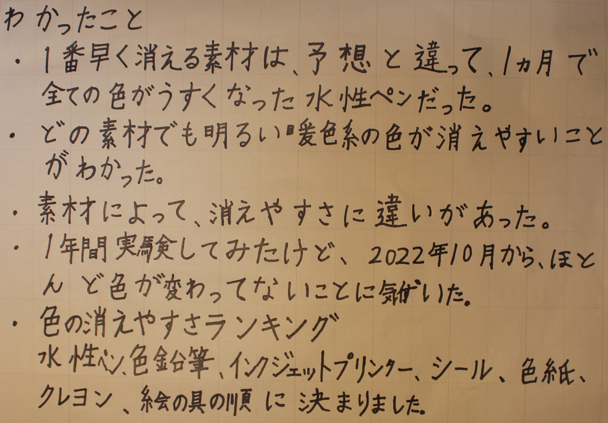

1番早く色が消えるのは何色？素材は？

今回の研究方法

実験結果

結果から分かったこと
Chat GPT(GPT-3.5)に回答を作ってもらった

Chat GPTとこれまでの実験結果を比べてみる。

しんどうでなぜ?回る?

研究のきっかけ
家の外にある浄化槽ポンプがいつも「ブー」と音を出して振動していた。 そこに、小さい石を置いて遊んでいた。そうすると、石も振動して、 少しずつ動いていることに驚いた。他の振動するものも全て回るのか 気になった。
調べたいこと
家の中にある振動するものを動かすか、その上に小さなものを乗せると、 全て回るのか調べる。振動するものも調べる。
予想
全て回る。
用いたもの
A.家の外にある浄化槽ポンプ、B.スマートフォン、C.電動歯ブラシ(ブラシが回転しないもの)
実験方法
A.とB.は[1]上に小さなものを乗せる。[2]観察する。
C.は[1]電源を入れる(標準)[2]観察する。
結果
全て回った。
分かったこと
- 振動する物の上に乗せた小さなものや、振動するものは、予想通り全て回った。
- 回る方向は、A.とC.は時計回りで、B.だけが反時計回りだった。
- すぐ回りだしたものと、初めは震え、回りだしたものがあったのはなぜだろう と不思議だった。電動歯ブラシが他よりも速く回ったのはなぜだろうか。電動歯ブラシには、 中に速く回るものがあるからだと思う。
- 回る速さは、振動が大きくなるほど速いと思った。また、石は小さく、軽いものほど速く回っていた。
- 来年は、振動の大きさや、石の大きさの違いで回る速さがどのくらい違うのか、回転の方向について、考えたい。
映像
Ⓐ浄化槽ポンプ
音量注意
Ⓑスマートフォン
音量注意、低画質
Ⓒ電動歯ブラシ
音量注意